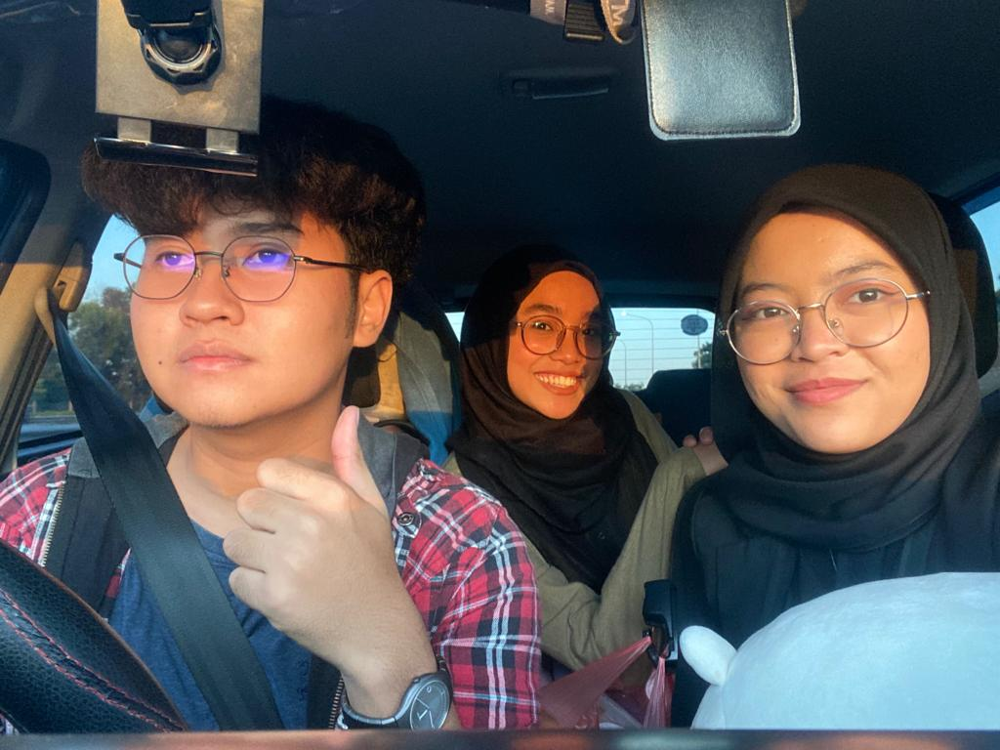
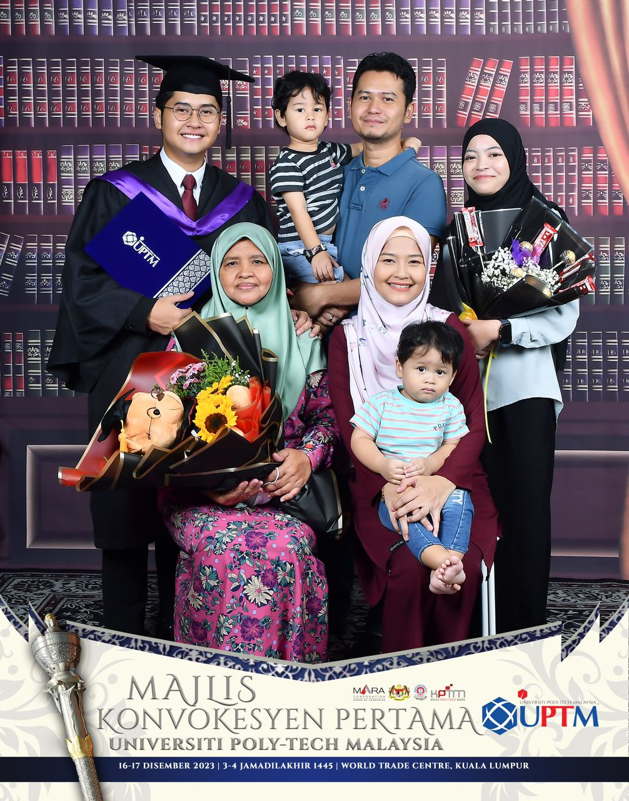
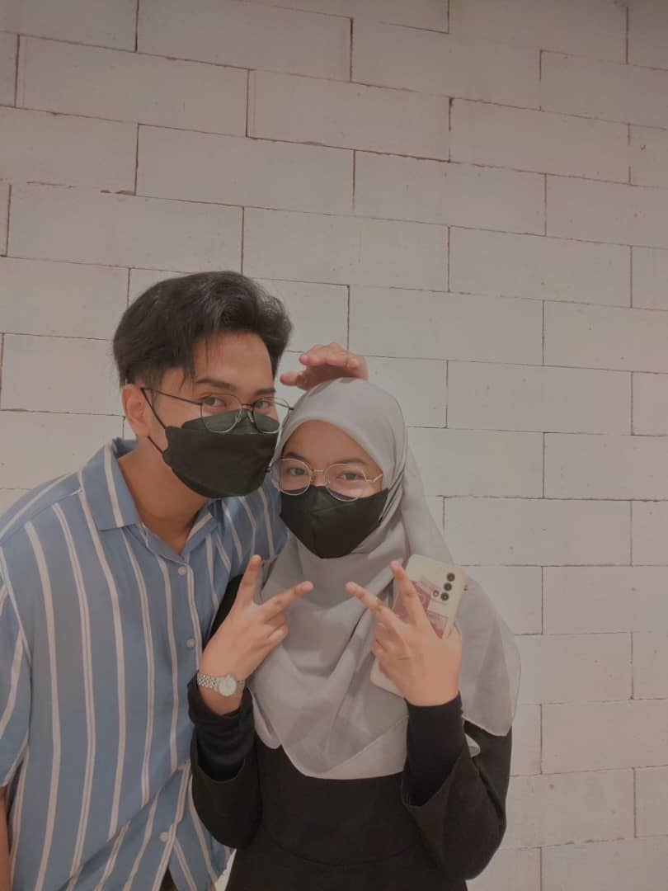
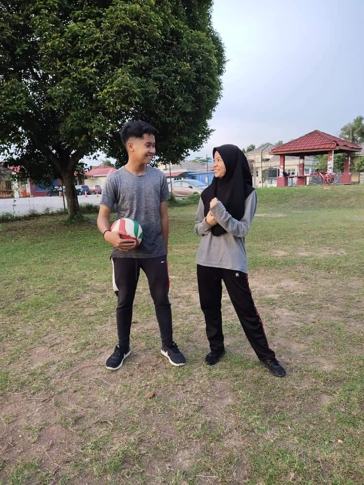
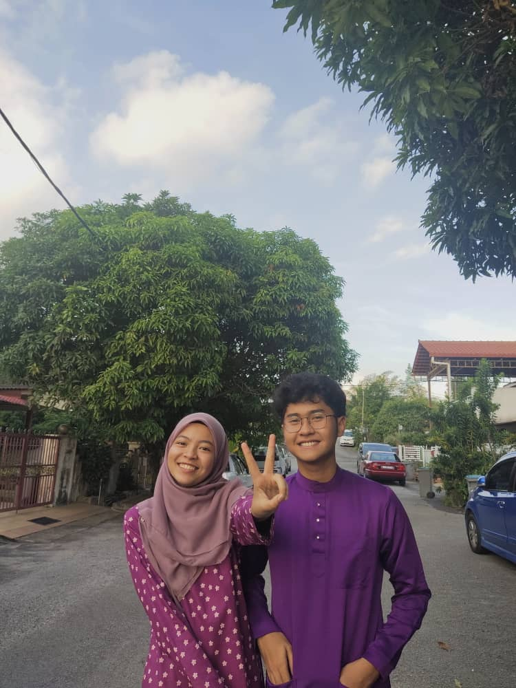
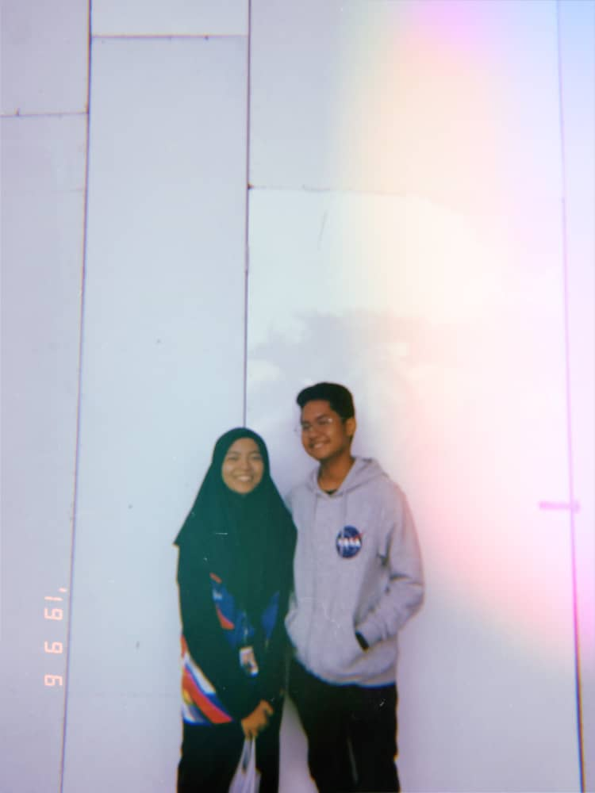
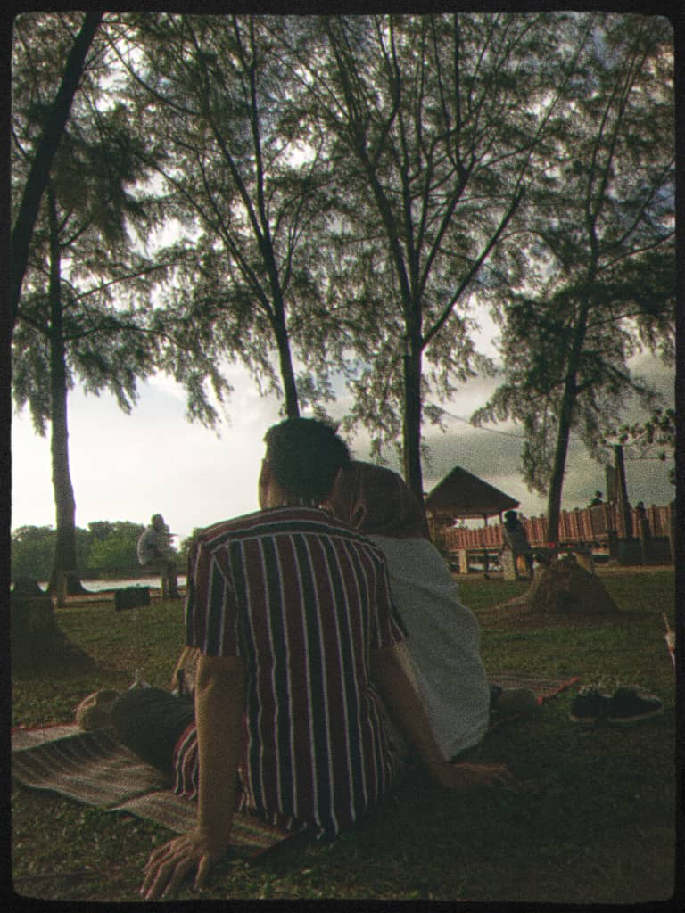
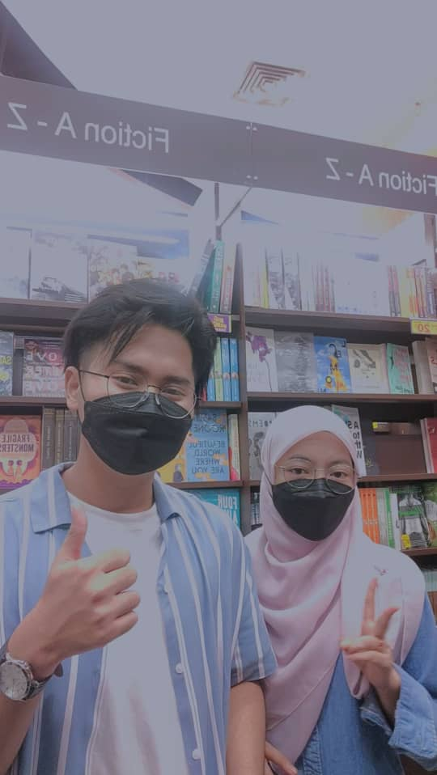
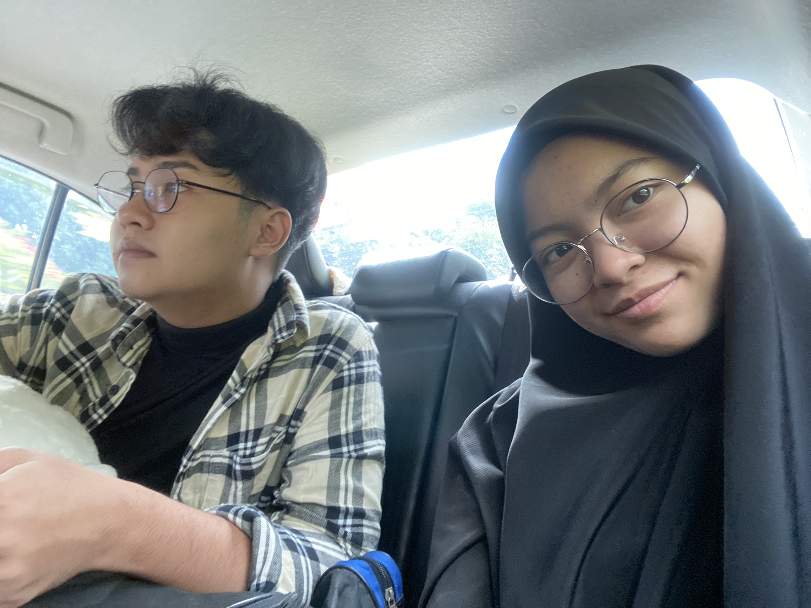
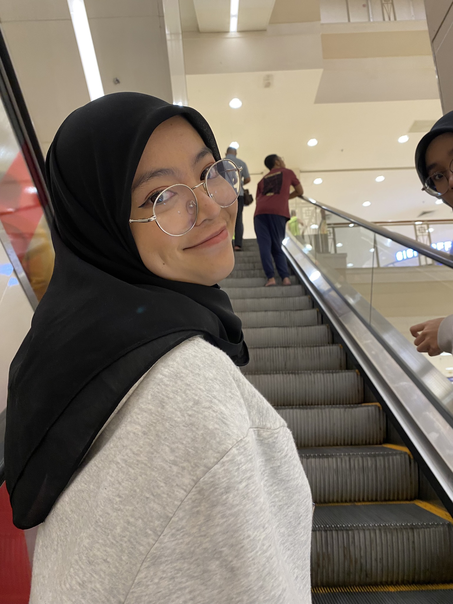

Wolf Pearl 🖤🐈⬛
Petrosains's date
Masa ni, my Pearl and I plan to goes on a date to petrosains KLCC! we have fun through out the whole day and even goes to a book store since both of us are a book nerds 😂
Photo Collection!
We went to Aeon Nilai togeher along with wawa! masa ni Pearl and Wawa are doing their internship at beylla medispa senawang. Which mean i get to hangout with them a lot but sadly they have to pindah tempat intern after a month 🥲
She came to my Convocation day! at first i didnt know how to tell my mom that i wanna ajak her tidur rumah cyberjaya to come my convocation next day. LAST2 DIA YANG SUGGEST OMG 😭. She even join in on my family's convocation photo and it make me sooo damnn happyy
This is one of my favouriteee picture of us sebab it lookks coomel gilaaa 🥹💓 we went to a book event called "Big Bad Wolf" and we absolutely love it! definitely be going to the event lagi bila ada rezeki because the price's not bad for a box of books!
This is back to 2020! right after pkp ended 😂 we do some volleyball and softball's practice! she's very good at it and I love that she have fun practicing it because she look veryy passionate about it!
This is 2022 punya raya tak silap, we always plan to match our baju rayaa because boleh ambil gambar matchy ii. Luckly, Masa ni Liana was there to take our picture sebab kalau tak memang tak berselfie je kami 😂
This is one of our first picture together as a couple! she want my hoodie at the time so instead of giving her mine, i just bought a new one for her 😂(take me 2 month to kumpul) but now i didnt even wear my baju nasa sebab dah tak muat!
We went to pd for the first time together! I love this moment because it felt reallyy romantic and we get to deep talk beside the ocean sampai 7+ sebab our friend jalan kaki jauh so kena tunggu dia datang balik 😌
Bookstore date again! hahahaha hentah berapa juta kali kitorang pergi masuk Popular dekat Aeon Seremban 2 tu. Setiapp kali pergi aeon memang wajib masuk 😂 dua dua pula memang minat buku, kadang masuk baca je tak beli pun sebab tak berduit 🥲
My mom send my pearl and I balik each other punya college sebab at the time, i just got into an accident with a Hilux that causes my car to total loss but I didnt regret being in the accident langsung sebab at least my girl sampai to her college safely!
Okay Fellas, THIS IS MY ALL TIME FAVOURITE PICTURE OF HER!
Look at that natural pose, that smile and THOSEE EYESS. This is the picture of her that I show to everybody whenever someone asked me wheather I have a girlfriend or not and I would proudly and riakly show this picture of her!!!
Balik-Balik